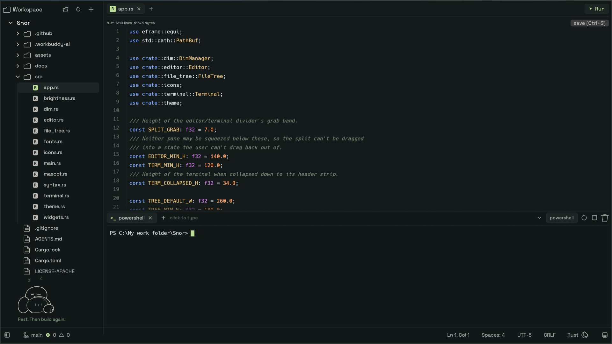
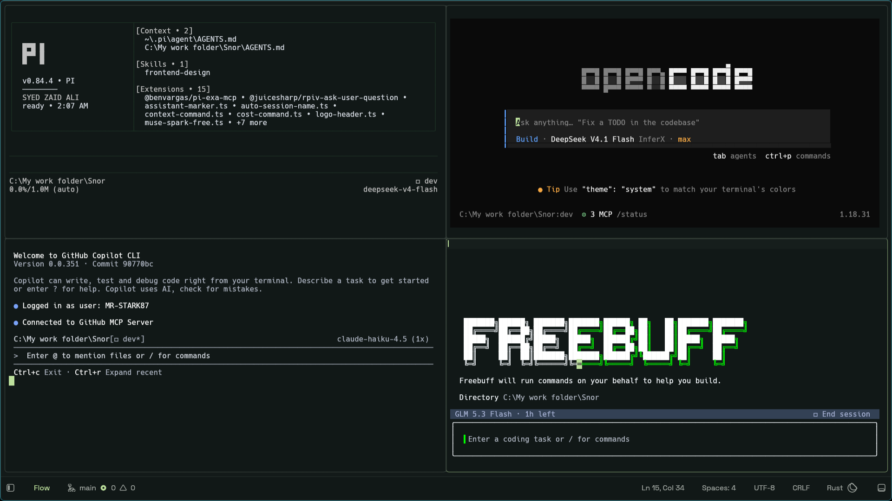
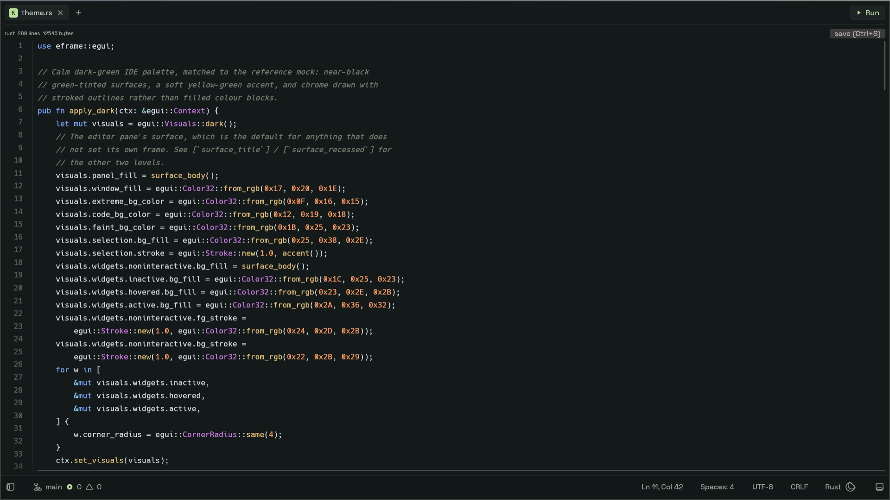
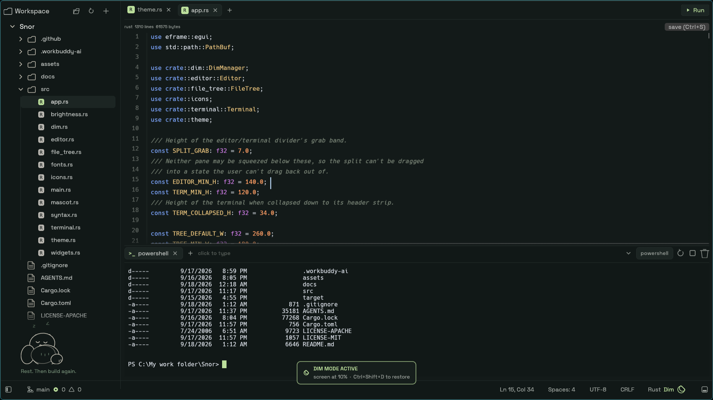

Docs v0.8
Everything Snor does, and how to drive it.
Snor is deliberately small, so this manual is short. Nine sections: getting it running, the four surfaces of the workspace, and the numbers the project is measured on.
Getting started
Snor ships as a single executable. There is no installer, no account, and nothing to configure before the window opens — the exe is the whole application.
- Download the exe and put it wherever you keep tools. There is no install step and nothing is written to the registry.
- Run it. Windows SmartScreen will likely flag the first launch, because the build is unsigned — see troubleshooting for what that prompt means.
- Open a folder from the top bar. The explorer fills in and the editor is ready.
- Press Ctrl+Tab for a shell, then start your agent of choice inside it. Press Ctrl+Shift+F when you want more than one.
The workspace
One window holds four surfaces. Nothing is buried in a menu, and nothing opens in a separate window: the explorer sits on the left, the editor takes the centre, the terminal panel sits below it, and a status bar runs along the bottom.

Explorer, editor and terminal sharing one frame.
| Surface | Behaviour |
|---|---|
| Explorer | Left column. Resizable and collapsible, toggled with Ctrl+B. Follows the focused terminal pane. |
| Editor | Centre. Badge tabs, line-number gutter, tree-sitter highlighting, in-file find. |
| Terminal | Bottom panel behind a tab strip. Toggled with Ctrl+Tab; closing the last tab hides the panel. |
| Status bar | Bottom edge. Carries the Dim Mode indicator when it is active. |
Flow Mode
Flow Mode is the reason Snor exists. The entire window becomes live terminal panes, so several agents can run at once and you can watch all of them. Press Ctrl+Shift+F to enter it.

Four agents supervised at once — pi, opencode, Copilot CLI, and a fourth session.
Splitting and focus
Ctrl+Shift+H splits horizontally and Ctrl+Shift+V vertically; both enter Flow Mode if you are not already in it. Alt+arrows move focus between panes.
Real shells, not a fake
Each pane is a genuine ConPTY session running
powershell.exe -NoLogo -NoProfile, with colours and a block cursor. Click
a pane and type: Enter, arrows, Tab, Backspace and Ctrl+C all
reach the shell. The pane answers DSR / CPR / DA queries, which is what keeps
PSReadLine from blocking on a prompt it never gets an answer to.
The explorer follows focus
The file list re-roots at the focused terminal's working directory, so the tree always describes the pane you are looking at. Any folder offers open terminal here, which is the quickest way to give each agent its own corner of the project.
Editor & file tree
The editor is for touching files without leaving the flow — not for replacing a power-user editor. It covers the moves you actually make while supervising agents.

Badge tabs, line-number gutter, tree-sitter highlighting.
- Highlighting
-
Tree-sitter grammars for
rust,json,jsandtoml, with a keyword fallback for everything else. Tree-sitter stops at 100 KB and the whole highlighter steps aside above 500 KB, so a large file opens immediately instead of stalling the frame. - Find and save
- Ctrl+F opens in-file find. Enter jumps to the next match and Shift+Enter to the previous one. Ctrl+S saves.
- Run
-
The Run button sends
cargo runto the focused terminal, so the build output lands in a pane you already have open. - File tree
- Create, rename and delete files from the explorer. A filesystem watcher refreshes the tree without a manual reload, and the explorer is resizable and collapsible on Ctrl+B.
Dim Mode
Ctrl+Shift+D lowers the physical backlight over WMI so an overnight agent run does not light the room. A moon in the status bar shows while it is active.
- Reads the current brightness, drops to 10%, and restores it exactly on exit
- An overlay card confirms the state — no stale residue on toggle-off
- Best-effort restore on shutdown, and it never panics
- Machines without WMI brightness control get a notice instead of a silent failure

DIM MODE ACTIVE — screen at 10%.
Keyboard reference
Every action in Snor is one chord away. There is no command palette to memorise and no keybinding file to edit.
| Keys | Action |
|---|---|
| Ctrl+Shift+F | Flow Mode — side-by-side agent panes |
| Ctrl+Shift+H / V | Split pane, entering Flow Mode |
| Alt+arrows | Move pane focus |
| Ctrl+Tab | Toggle terminal |
| Ctrl+B | Toggle explorer |
| Ctrl+Shift+D | Dim Mode |
| Ctrl+S | Save file |
| Ctrl+F | Find in file (Enter next, Shift+Enter previous) |
| F11 | Fullscreen |
Memory methodology
The headline figure is ~155 MB, and it is a peak rather than a level. That distinction matters, because the same process will happily report a much lower number once Windows has trimmed it in the background — which is exactly what a less careful page would quote.
What each number means
| Counter | What it reports |
|---|---|
WorkingSet64 | Resident pages right now. Windows trims these freely for a backgrounded window, so it is the most flattering and least stable number. |
PeakWorkingSetSize | The high-water mark for the life of the process. This is the ~155 MB figure. |
PagefileUsage | Commit charge — memory the process has actually reserved. It does not get trimmed, so it is the number that stays put. |
Measured on one long-lived debug process
Get-Process Snor | Select-Object Name, @{N='MB';E={[math]::Round($_.WorkingSet64/1MB,1)}}Get-Process Snor | Select-Object Name,
@{N='Resident';E={[math]::Round($_.WorkingSet64/1MB,1)}},
@{N='Peak';E={[math]::Round($_.PeakWorkingSet64/1MB,1)}},
@{N='Commit';E={[math]::Round($_.PagefileUsage/1MB,1)}}How it got there
| Version | Result |
|---|---|
| V1 debug / release | ~306–313 MB / ~331 MB, 17 MB exe |
| V1.1 — glow, strip, thin LTO | ~173 MB / ~167 MB, 12.5 MB exe |
| Now | ~155 MB peak · ~147 MB commit · ~11 MB exe |
The V1.1 step — the glow backend, stripping symbols and thin LTO — did most of the work. The rest came from keeping scope out rather than from micro-optimising.
Building from source
A stable Rust toolchain is the only requirement. There is no build script to run and no code generation step.
git clone https://github.com/MR-STARK87/Snor
cd Snor
cargo run --releasecargo test
cargo clippyDependencies
Snor is built on a small, pinned set of crates. Everything is locked in
Cargo.lock.
| Crate | Used for |
|---|---|
eframe 0.36 / egui (glow) | The window, layout and rendering backend |
ropey | Text buffer behind the editor |
tree-sitter | Syntax highlighting for rust, json, js and toml |
portable-pty | ConPTY sessions for the terminal panes |
vt100 | Parsing terminal output into a grid |
notify | Filesystem watcher that keeps the explorer honest |
rfd | Native folder picker |
Licensed under MIT OR Apache-2.0 — pick either.
Troubleshooting
SmartScreen flags the download
Expected. The v0.8 build is unsigned, so Windows shows the "unrecognised app" prompt on first launch. Choose More info then Run anyway. Signed binaries are on the roadmap — this is a preview, and the site says so rather than hiding it.
Dim Mode reports no brightness control
Some desktops, virtual machines and external-monitor-only setups expose no WMI brightness interface. Snor shows a notice instead of pretending the screen went dark. The rest of the app is unaffected.
A large file opens without highlighting
By design. Tree-sitter stops at 100 KB and the highlighter steps aside above 500 KB, so a big file opens immediately rather than locking the frame while a grammar walks it.
There is no git panel
Also by design. Snor is not a git client — that scope stays out so the memory figure stays where it is. Use your own client alongside it, or run it in a terminal pane.